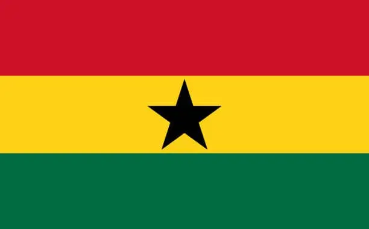

Data
- Area: 238,535 sq km
- Population: 33.4 million
- Capital: Accra
- Languages: English, Akan, Ewe, Ga
- Currency: Ghanaian Cedi (GHS)
- Time Zone: GMT
- Calling Code: +233
- Internet TLD: .gh
Weather
- Temperature: 30 °C
- Conditions: Sunny
- Wind: 10 km/h
- Wind Chill: N/A